Classic Automotive Systems Restoration
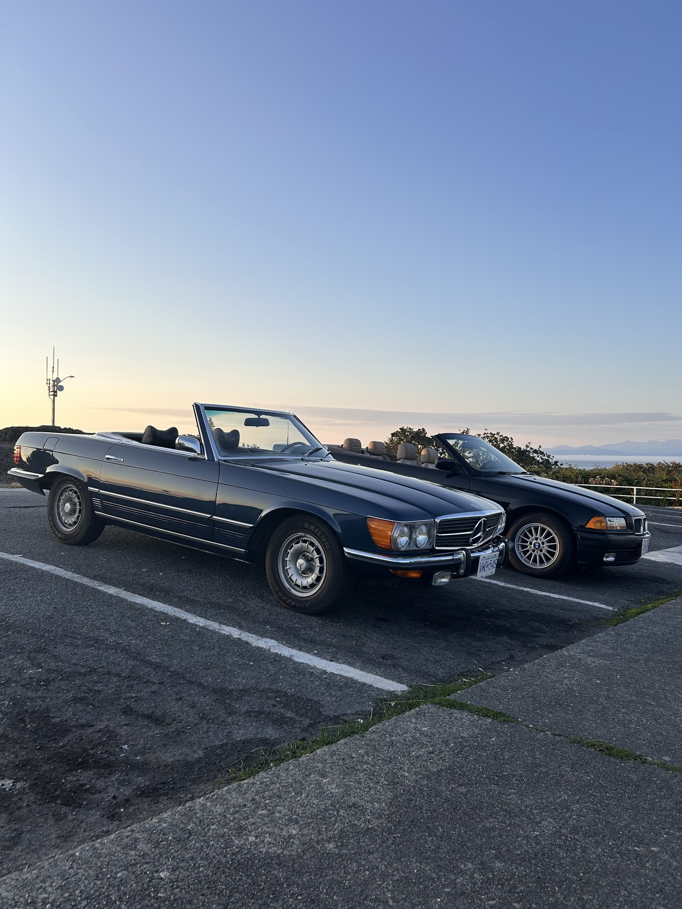
Procured three classic vehicles left exposed to an oceanfront environment for over 30 years and executed comprehensive mechanical, electrical, and cosmetic restorations on two of them: a 1973 Mercedes-Benz 450SL (R107) and a 1976 Rolls-Royce Silver Shadow. Navigating 50-year-old wiring harnesses, seized mechanical assemblies, and obsolete technical documentation, this multi-year project focused on systematic fault isolation, component-level rebuilding, and CAD-based reverse engineering to return both vehicles to reliable, roadworthy operation.
1973 Mercedes-Benz 450SL (R107)
Using archival factory service manuals and original chassis wiring diagrams, the 450SL restoration was executed in two distinct engineering phases: an initial mechanical, electrical, and suspension overhaul to validate drivetrain reliability on its original paint, followed by a bare-metal cosmetic restoration and full reassembly.
Initial Teardown & Subsystem Assessment
After decades of outdoor storage, the vehicle exhibited oxidized single-stage paint, a partially disassembled front clip, and dormant fuel and electrical systems. Prior to any cosmetic work, the front end—including the grille, headlight assemblies, and bumper—was systematically dismantled to expose the engine bay and chassis structure for corrosion assessment and subsystem inspection.
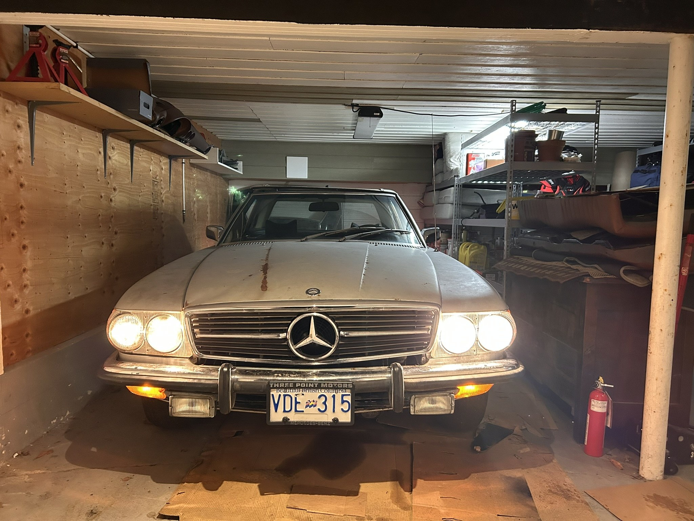
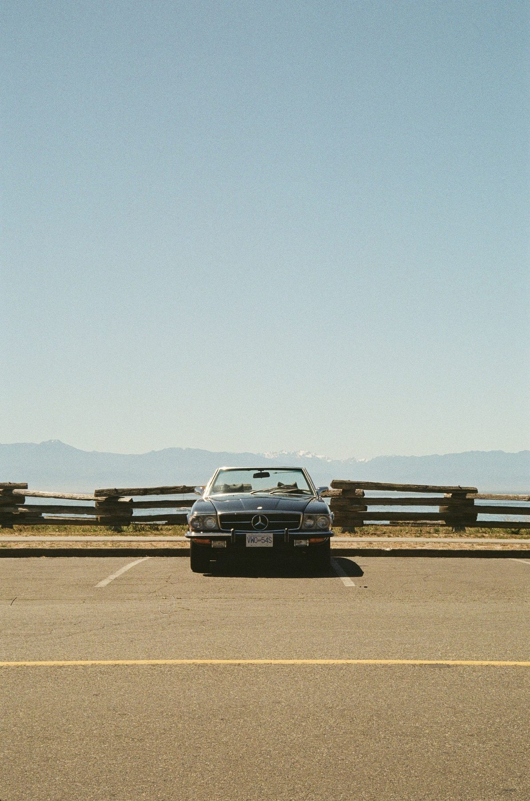
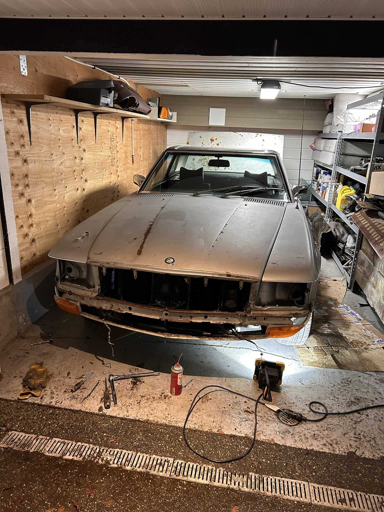
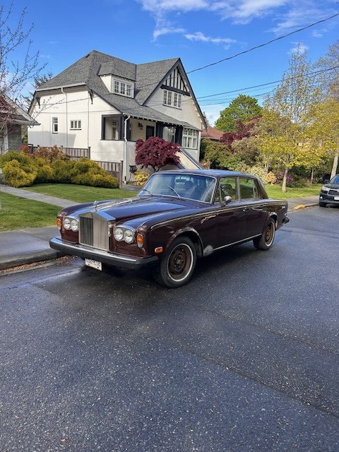
Fuel Delivery, Ignition & Drivetrain Diagnostics
Phase one prioritized validating the M117 V8 drivetrain. This required a connector-by-connector audit of the ignition system, fuel delivery architecture, and engine bay wiring harness. Corroded Bosch relay terminals were restored, and the K-Jetronic fuel pump and accumulator assembly was bench-rebuilt to restore proper line pressure. The videos below document early diagnostic cranking, spark and fuel pressure verification, and the engine's first sustained idle after decades of dormancy.


Suspension & Braking Overhaul
Disassembly of the front suspension revealed severe surface corrosion across all unprotected steel components—including the struts, coil springs, control arms, tie rod ends, brake rotors, and calipers. Each assembly was stripped, evaluated against structural tolerances, and rebuilt with replacement hardware and braking components to ensure safe handling and stopping performance.


Electrical Harness Reconstruction & Schematic Tracing
All electrical fault-finding, relay restoration, and cabin rewiring were executed using the original factory wiring diagrams for the 107.044/024 chassis. Under the dashboard, the factory audio and accessory harness had been severed during a previous aftermarket installation. Rather than applying temporary splices, every circuit was traced back against the factory wire color codes and component legends, properly re-terminated, and paired with a securely remounted control unit.

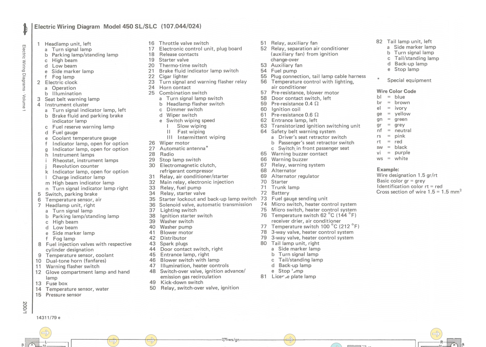
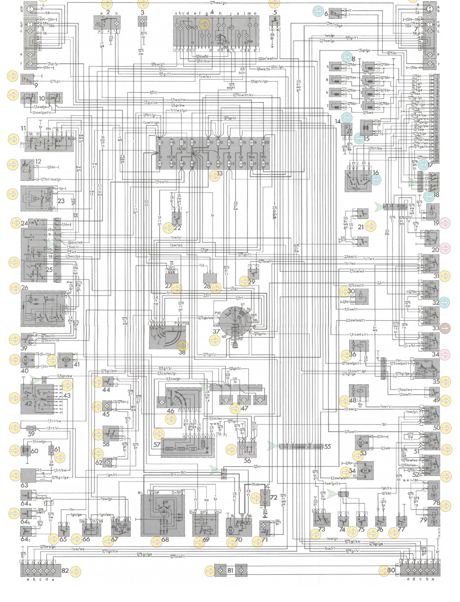
Phase 1 Validation & Road Testing
With the drivetrain, brakes, suspension, and electrical systems restored, the vehicle underwent extensive road testing while still wearing its original 50-year-old patina. Logging real-world miles prior to cosmetic teardown allowed any remaining mechanical or thermal issues to be identified and resolved before committing to bodywork.


CAD Reverse-Engineering & Additive Manufacturing
Where original interior trim and climate-control hardware were broken or no longer available, components were measured, reverse-engineered in Autodesk Fusion 360, and fabricated via 3D printing—including replacement AC control interfaces and custom hardware, alongside a full surface model of the 450SL body.

Bare-Metal Surface Preparation & Refinishing
Once mechanical reliability was proven, the vehicle entered phase two: a full bare-metal cosmetic restoration. Referencing the historical R107 factory paint specifications, a period-correct dark blue-green metallic finish was selected. Every removable body panel was detached, and the entire shell was stripped to bare metal by hand to eliminate oxidation and ensure proper primer adhesion.


To achieve uniform coverage across complex panel geometries and seams, detached panels were sprayed individually on stands before masking and spraying the main unibody shell in the booth.


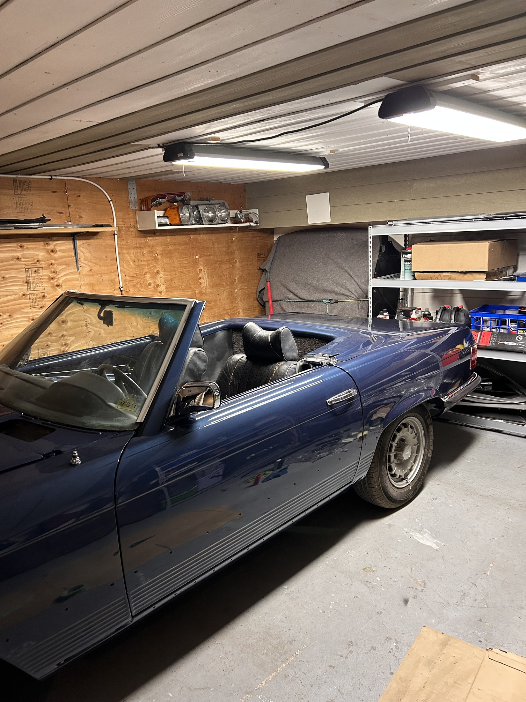
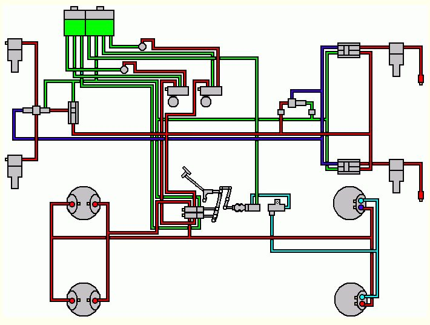
Interior Reconditioning & Final Assembly
Alongside the exterior refinishing, the cabin and trunk were stripped and reconditioned—preserving and restoring the original leather seating, dashboard, instrumentation, door cards, and carpeting rather than replacing them outright. Final assembly reunited the painted panels, exterior trim, bumpers, and lighting harnesses with the chassis.


1976 Rolls-Royce Silver Shadow — Hydraulic & Mechanical Overhaul
The second restoration focused on a left-hand-drive 1976 Rolls-Royce Silver Shadow—an interim "Shadow 1.5" model incorporating Series II mechanical revisions while retaining the Series I body and dashboard architecture. The primary engineering challenge was a complete teardown and component-level rebuild of its dual-circuit, high-pressure hydraulic system, which powers both the braking system and the active self-leveling suspension. Because replacement assemblies are prohibitively expensive and complex, improper maintenance frequently renders these vehicles inoperable. By studying the fluid-power schematics and rebuilding individual pumps, accumulators, height-control valves, and distribution blocks in-house, the entire hydraulic architecture was restored to factory operating pressure.


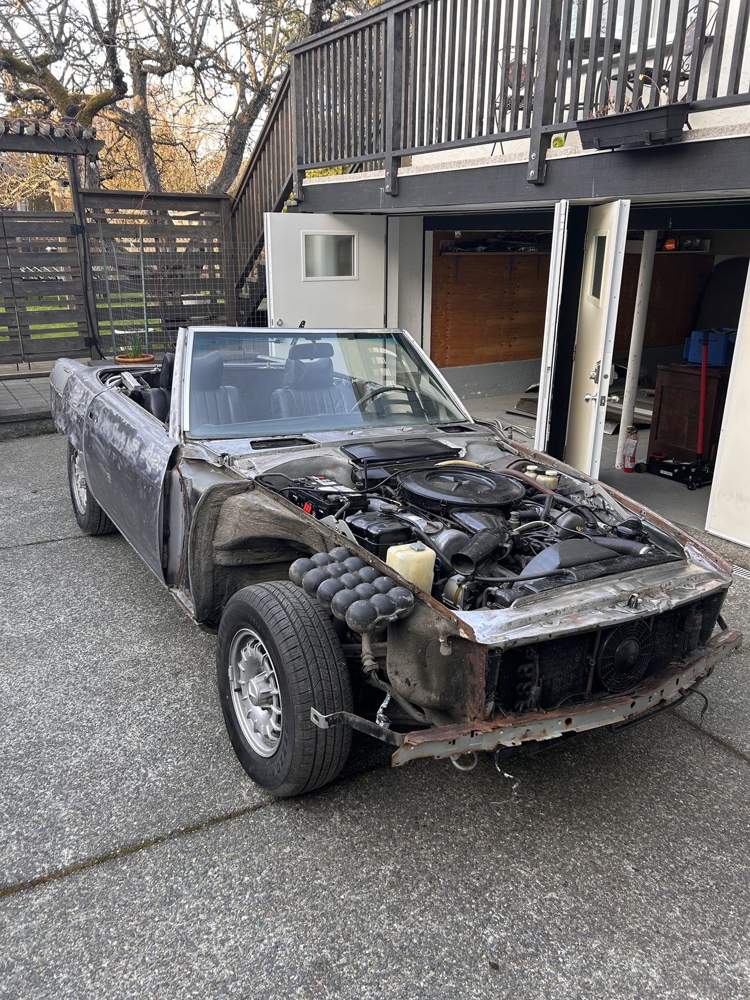

Hydraulic component-position reference diagram © Rob Wilde, utilized for subsystem identification during teardown.
Electrical Specification & Schematic Analysis (T.S.D. 2476)
Because Rolls-Royce and Bentley revised harness architectures repeatedly across the Silver Shadow's 19-year production run, electrical diagnostics required isolating the exact specification in the factory workshop manual (T.S.D. 2476). For this North American LHD 1976 chassis, fault-finding relied on Section 16 (August 1975 Electrical Specification, Sheet 3, T.S.D. Publication 4148). The system architecture spans three primary schematics: charging, ignition, and starting networks; electromechanical seat actuators, window lifts, central locking, and fault-warning logic; and exterior lighting, climate control, and audio circuits.
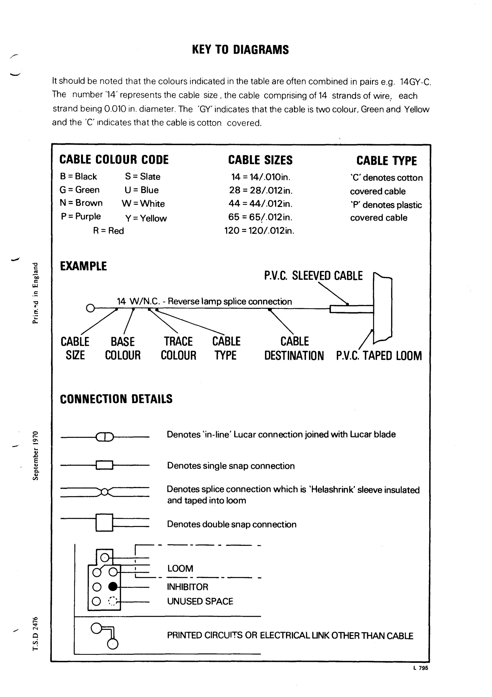

Dynamic Road Testing
Following the hydraulic and electrical overhaul, the Silver Shadow returned to regular road service, demonstrating level ride-height regulation, balanced braking, and reliable drivetrain performance.
Completed Builds
Both vehicles were returned from decades of coastal neglect to fully functional, daily-drivable condition—representing two distinct 1970s European engineering philosophies restored from the ground up.

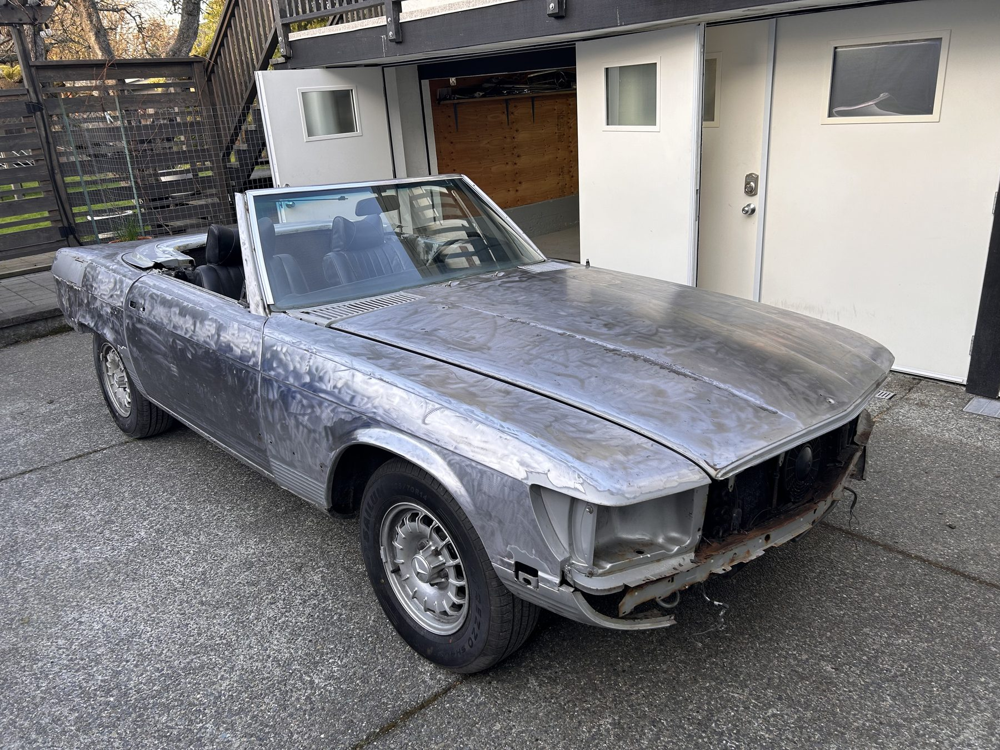